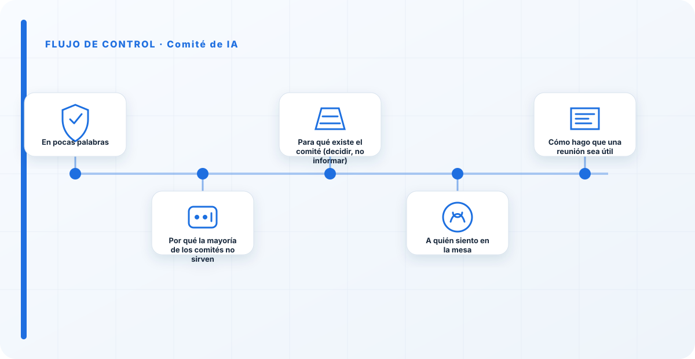
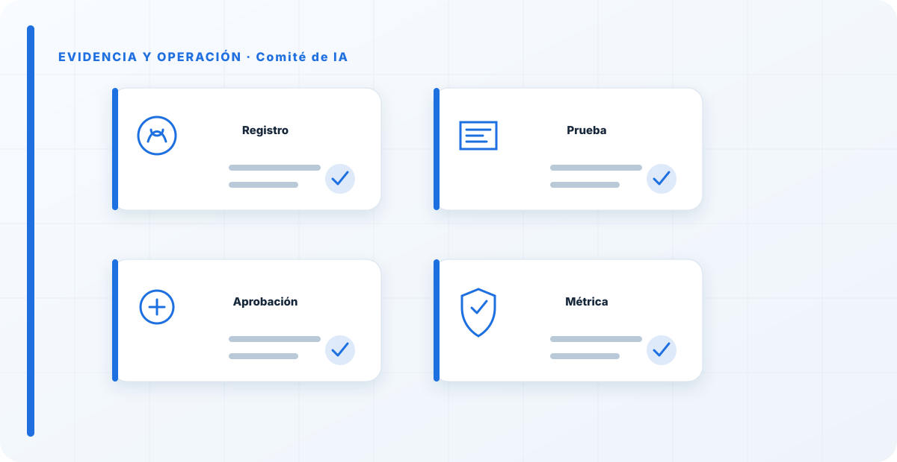

En pocas palabras
He estado en muchos comités de IA, y la mayoría comparten el mismo defecto: son reuniones donde se informa de lo que ya está hecho. Alguien presenta un sistema que lleva meses en producción, todos asienten, se levanta acta y no se decide nada. Eso no es un comité, es una ceremonia. Un comité de IA útil existe para lo contrario: para tomar decisiones antes —aprobar, rechazar, poner condiciones, priorizar, gestionar excepciones— y asumir el riesgo en nombre de la organización. Si de tus reuniones no salen decisiones, no tienes un comité; tienes una agenda.
Por qué la mayoría de los comités no sirven
El problema de fondo es que muchos comités nacen para "dar visibilidad", no para decidir. Y cuando el objetivo es informar, el comité se convierte en un cuello de botella sin poder: ralentiza todo, no aporta criterio y la gente aprende a esquivarlo llevándole las cosas ya cerradas. Lo he visto muchas veces: el comité se reúne cada mes, revisa un PowerPoint, y los proyectos de verdad se aprueban por otro canal más rápido. En ese momento el comité ya está muerto, aunque siga reuniéndose.
La segunda razón por la que fallan es la composición: o son tan grandes que nadie decide, o les falta alguien clave —seguridad, legal, negocio— y entonces las decisiones se toman a medias y hay que rehacerlas. Un comité que no puede decidir en la sala porque siempre falta alguien no es un órgano de decisión, es una sala de espera.
Para qué existe el comité (decidir, no informar)
Cuando ayudo a montar uno, lo primero que dejo claro es su propósito: el comité es el órgano que decide y asume el riesgo sobre los sistemas de IA de la organización. En concreto, aprueba o rechaza los despliegues relevantes, pone condiciones cuando un riesgo no está del todo cerrado, prioriza qué se hace y qué no, gestiona las excepciones a la política y decide las retiradas. No entra en el detalle técnico de cada modelo —para eso está el propietario del sistema y seguridad—; entra en la decisión.
Y hay una parte incómoda que insisto en que se asuma: cuando el comité aprueba algo con un riesgo residual, ese riesgo lo está aceptando la organización a través del comité. No es un visto bueno formal; es una firma. Si nadie está dispuesto a firmar, la decisión no está madura para aprobarse.

A quién siento en la mesa
Busco el comité más pequeño que pueda decidir sin tener que salir a preguntar. En la práctica, eso suele significar: alguien de dirección con capacidad de asumir riesgo y asignar recursos; seguridad; privacidad; legal/cumplimiento; y negocio —quien representa el valor del caso de uso—. Según la organización, se suma tecnología o datos. Cada uno viene con capacidad de decidir en su ámbito, no a tomar notas para consultar luego.
El propietario de cada sistema no es miembro permanente: viene a defender su caso cuando toca. Y auditoría no se sienta a decidir —eso comprometería su independencia—; observa y verifica después. Menos gente con poder real decide mejor que mucha gente sin él.
Cómo hago que una reunión sea útil
Un comité útil se nota en cómo trabaja, no en su reglamento. Estas son las reglas que aplico:
- Cadencia con sentido, y una vía rápida para lo urgente. Si algo no puede esperar a la reunión mensual, tiene que haber un camino para decidirlo antes, no un incentivo para saltarse el comité.
- Orden del día con decisiones, no con informes. Cada punto llega con una pregunta concreta: "¿aprobamos esto, con estas condiciones?", no "os cuento cómo va esto".
- Material por adelantado. La sala es para decidir, no para leer. Quien trae un punto lo manda antes; en la reunión se discute y se decide.
- Cada decisión se registra con qué se decidió, quién la asume y con qué condiciones y plazo. Un acta que dice "se presentó X" no vale; una que dice "se aprobó X con la condición Y, responsable Z" es la prueba de que el comité decide.
La salud de un comité se mide por una cosa: ¿cuántas veces ha dicho que no, o "sí, pero con condiciones"? Un comité que aprueba todo lo que le llega no está filtrando nada; es un sello de goma con calendario. El día que un comité rechaza su primer proyecto o para uno hasta cerrar un riesgo, ese día empieza a existir de verdad.
Los errores que veo una y otra vez
- Informar en vez de decidir. El pecado original: reuniones que repasan lo ya hecho.
- Aprobar lo que ya está en producción. El comité llega tarde por diseño y solo bendice.
- Demasiada gente sin poder de decisión. Nadie asume nada y todo se pospone.
- Falta alguien clave y las decisiones se toman a medias.
- Actas que narran en vez de decidir. El bucle queda abierto.
- Sin vía rápida: lo urgente se salta el comité y este se vuelve irrelevante.
Cómo sé que el comité funciona
Miro cosas muy concretas: qué proporción de los sistemas relevantes pasa realmente por el comité antes de desplegarse; cuántas decisiones ha tomado que hayan cambiado algo —aprobar con condiciones, rechazar, parar—; cuánto tarda de media un caso en obtener decisión (si tarda demasiado, la gente lo esquiva); y si las decisiones quedan registradas con responsable. Si esos números respiran, el comité está vivo. Si solo hay actas y ninguna decisión con consecuencias, es teatro.
Checklist práctica
- El comité decide antes del despliegue, no después.
- Está la gente con poder para decidir en la sala.
- El orden del día plantea decisiones, no informes.
- Existe una vía rápida para lo urgente.
- Cada decisión se registra con responsable y condiciones.
- El comité ha dicho "no" o "sí, pero" alguna vez.
Cómo lo llevaría a un entorno real
Cuando aterrizo comité de ia en una organización, no empiezo por comprar una herramienta ni por redactar veinte páginas. Empiezo por dibujar qué ocurre hoy: quién solicita el cambio, quién lo aprueba, qué sistemas intervienen, qué datos cruzan el proceso y quién se entera cuando algo falla. Ese dibujo suele descubrir más problemas que cualquier checklist. En gobernanza, lo peligroso no es solo carecer de controles; también lo es creer que existen porque alguien los escribió una vez.
Después separo lo imprescindible de lo deseable. Lo imprescindible debe poder comprobarse: un responsable identificado, una regla clara, una evidencia fechada y un mecanismo para reaccionar. En este caso revisaría especialmente Comité, responsable y control. No me vale una respuesta del tipo «lo gestiona el proveedor» o «eso lo mira seguridad». Necesito saber qué persona toma la decisión, con qué información y dentro de qué plazo.
La implantación debe crecer con el riesgo. Un piloto interno puede funcionar con una ficha breve y una revisión manual. Un sistema que afecta a clientes, empleados, dinero o información sensible necesita segregación de funciones, pruebas independientes, monitorización y un expediente mantenido. Mi criterio es sencillo: cuanto más difícil sea deshacer el daño, más fuerte debe ser la barrera antes de producción.

Decisiones que deben quedar por escrito
Hay decisiones que no deberían vivir en una reunión ni en un mensaje de chat. Para comité de ia dejaría documentados el alcance, los supuestos, los límites de uso, las excepciones aceptadas y las condiciones que obligan a detener o reevaluar. El documento no tiene que ser enorme, pero sí debe permitir que otra persona entienda por qué se hizo lo que se hizo.
También registraría quién puede cambiar evidencia, quién valida Comité y quién recibe las alertas relacionadas con responsable. Cuando esas tres responsabilidades se mezclan, aparece el clásico problema: el mismo equipo construye, aprueba y declara que todo funciona. No siempre se puede separar por completo, sobre todo en organizaciones pequeñas, pero al menos debe existir una revisión por alguien que no dependa del éxito inmediato del despliegue.
Las excepciones merecen un tratamiento propio. Una excepción sin fecha de caducidad acaba convirtiéndose en la arquitectura real. Por eso exigiría motivo, riesgo aceptado, responsable, compensaciones, fecha de revisión y criterio de cierre. Si falta uno de esos elementos, no es una excepción gestionada; es una deuda invisible.
Un ejemplo práctico
Imaginemos que un equipo quiere incorporar comité de ia a un servicio que ya está en producción. La propuesta promete reducir tiempos y automatizar tareas, pero utiliza componentes que cambian con frecuencia. Antes de aprobarlo, pediría una prueba limitada, un inventario de dependencias, un flujo de datos y una definición clara de qué acciones quedan fuera del alcance.
Durante la prueba recogería resultados normales y casos límite. No solo miraría si funciona; comprobaría qué ocurre cuando faltan datos, cambia una versión, se pierde conectividad, llega una entrada manipulada o un usuario intenta superar sus permisos. Ahí es donde se ve si el diseño aguanta. En muchas pruebas felices todo parece seguro porque nadie ha intentado romper la hipótesis de partida.
Si los resultados son aceptables, la salida a producción tendría condiciones: versión fijada, configuración aprobada, logs disponibles, responsables de guardia, procedimiento de rollback y revisión tras las primeras semanas. Si alguno de esos elementos no existe, prefiero retrasar el despliegue. Un día de demora suele ser más barato que investigar después un comportamiento que nadie puede reconstruir.
Qué evidencias guardaría
Para demostrar que el control funciona conservaría evidencias que cuenten una historia completa, no capturas sueltas. La historia debe enlazar necesidad, decisión, implementación, prueba y operación. En comité de ia eso incluye como mínimo la ficha del activo, el diagrama vigente, la configuración aprobada, el resultado de las pruebas y el registro de cambios.
No guardaría información por acumular. Si los logs contienen prompts, documentos, datos personales o secretos, aplicaría minimización, control de acceso y retención. La evidencia debe ayudar a investigar y auditar sin crear una segunda fuga de información. Es frecuente endurecer el sistema principal y dejar un repositorio de evidencias abierto a demasiadas personas.
- Propietario y finalidad de comité de ia, con fecha de revisión.
- Inventario de Comité, responsable y dependencias asociadas.
- Criterios de aceptación y resultados sobre control y evidencia.
- Configuración efectiva, versión y aprobación del cambio.
- Alertas, incidentes, excepciones y acciones correctivas cerradas.
Señales de que el control no está funcionando
El primer síntoma es que nadie sabe responder con rapidez quién es el responsable. El segundo es que la documentación describe una versión distinta de la que está operando. El tercero es que las alertas existen, pero llegan a un buzón que nadie revisa. Cuando aparecen esos tres síntomas, el problema no es tecnológico: el control se ha desconectado de la operación.
También desconfío de las métricas demasiado perfectas. Cero incidentes, cero excepciones y cien por cien de cumplimiento pueden significar excelencia, pero con frecuencia significan que no estamos mirando. Prefiero indicadores que enseñen tendencia: tiempo de corrección, antigüedad de excepciones, cobertura de pruebas, cambios sin revisión y reincidencias.
Por último, revisaría el comportamiento después de cada cambio significativo. En IA, una actualización de modelo, dataset, prompt, herramienta, permiso o proveedor puede alterar el riesgo sin cambiar el nombre del servicio. Si el proceso solo reevalúa cuando se crea un proyecto nuevo, se quedará ciego durante la mayor parte de la vida útil.
Mi criterio de cierre
Considero que comité de ia está razonablemente controlado cuando el equipo puede explicar el proceso sin depender de una sola persona, reconstruir una decisión con evidencias y detener el servicio sin improvisar. No busco perfección documental; busco que la organización pueda tomar decisiones repetibles bajo presión.
El cierre no consiste en marcar todas las casillas. Consiste en demostrar que los riesgos relevantes tienen propietario, que los controles se prueban y que las desviaciones producen una acción. Si la evidencia no cambia ninguna decisión, probablemente estamos generando burocracia. Si una decisión importante no deja evidencia, estamos creando fragilidad.
Este enfoque es el que intento mantener en toda CyberLibrary AI: explicar el control de forma que lo entienda negocio, pero con suficiente profundidad para que arquitectura, seguridad, auditoría y operaciones puedan aplicarlo de verdad.
Referencias y marcos relacionados
Contenido educativo y técnico. No sustituye asesoramiento jurídico ni una auditoría formal.